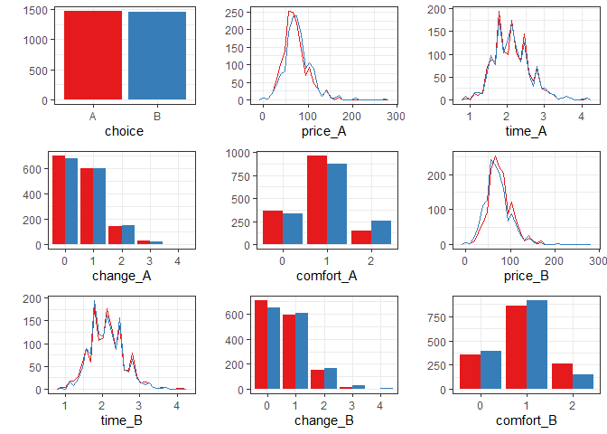

RprobitB is an R package for modeling and explaining choices among discrete alternatives.
The package name is a portmanteau, combining R (the programming language), probit (the model class) and B (for Bayesian, the estimation method).
The package is documented in several vignettes, see here.
Installation
You can install the released version of RprobitB from CRAN with:
install.packages("RprobitB")Next, load it via:
library("RprobitB")
#> Thanks for using {RprobitB} version 1.2.0, happy choice modeling!
#> Documentation: https://loelschlaeger.de/RprobitBExample
We analyze a data set of 2929 stated choices by 235 Dutch individuals deciding between two virtual train trip options based on the price, the travel time, the level of comfort, and the number of changes.
The following lines fit a probit model that explains the chosen trip alternatives (choice) by their price, time, number of changes, and level of comfort (the lower this value the higher the comfort). For normalization, the price coefficient is fixed to -1, which allows to interpret the other coefficients as monetary values:
form <- choice ~ price + time + change + comfort | 0
data <- prepare_data(form, train_choice, id = "deciderID", idc = "occasionID")
plot(data, by_choice = TRUE)
model <- fit_model(data, scale = "price := -1")The summary method provides summary statistics about the Gibbs samples:
FUN <- c("mean" = mean, "mode" = mode_approx, "sd" = stats::sd, "R^" = R_hat)
summary(model, FUN = FUN)
#> Probit model
#> Formula: choice ~ price + time + change + comfort | 0
#> R: 1000, B: 500, Q: 1
#> Level: Utility differences with respect to alternative 'B'.
#> Scale: Coefficient of effect 'price' (alpha_1) fixed to -1.
#>
#> Gibbs sample statistics
#> mean mode sd R^
#> alpha
#>
#> 1 -1.00 -1.00 0.00 1.00
#> 2 -25.84 -25.86 2.18 1.00
#> 3 -4.96 -4.85 0.81 1.00
#> 4 -14.36 -14.64 0.89 1.00
#>
#> Sigma
#>
#> 1,1 648.51 622.88 63.32 1.00The estimated effects obtained from the Gibbs sample means can be visualized via:

The results indicate that the deciders value one hour travel time by about 25€, an additional change by 5€, and a more comfortable class by 15€.
Now assume that a train company wants to anticipate the effect of a price increase on their market share. By our model, increasing the ticket price from 100€ to 110€ (ceteris paribus) draws 15% of the customers to the competitor who does not increase their prices:
new_prices <- data.frame(
"price_A" = c(100, 110), "price_B" = c(100, 100)
)
predict(model, data = new_prices, overview = FALSE)
#> deciderID occasionID A B prediction
#> 1 1 1 0.50 0.50 A
#> 2 2 1 0.35 0.65 BHowever, offering a better comfort class (0 here is better than 1) compensates for the higher price and even results in a gain of 7% market share: